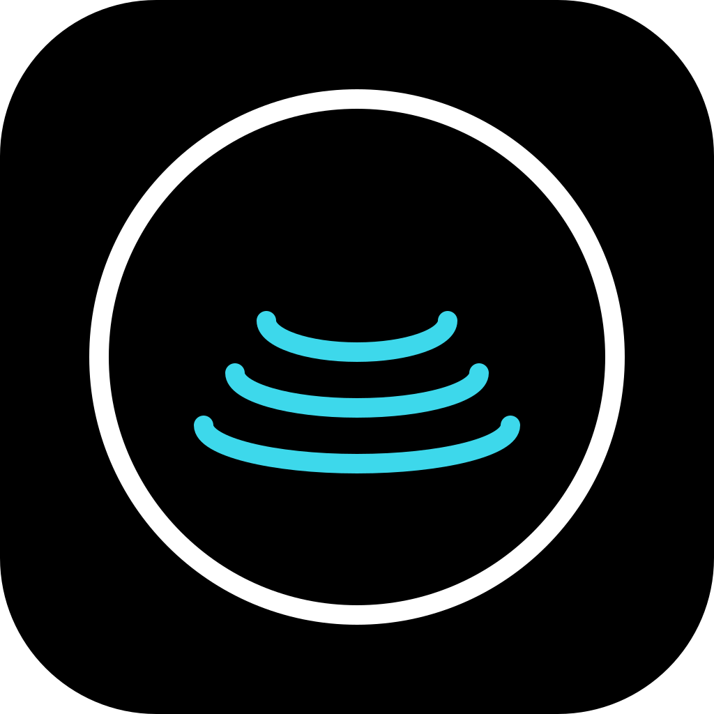

They only work on a projector.
The same page should read well on a phone before a meeting and export cleanly afterward.

deeptide deckUse this Deeptide-inspired deck as a starting point for high-quality launch docs, investor updates, internal proposals, and technical product presentations.
deeptide turns a repository into a working conversation. System runtime macOS native · Swift interface terminal-first contract tide-spec Agent model DeepSeek tools files · shell · git · MCP memory project-scoped Output edits reviewable patches checks local verification stories decks · docs · demos
The same page should read well on a phone before a meeting and export cleanly afterward.
A good deck makes the product, workflow, and proof visible in the first viewport.
HTML should give teams a durable template: editable copy, responsive layout, and print CSS.
Keychain auth, Notification Center, clickable file paths, power checks, signed distribution, and Apple hardware awareness.
File edits, shell execution, git context, MCP servers, hooks, slash commands, and sub-agents behind a small shared contract.
Through Paean AI, screenshots and documents can be described before entering a DeepSeek coding session.
Search, inspect files, restore project-scoped context, and understand local conventions.
Edit deliberately with tool-backed actions, reviewable patches, and optional parallel sub-agents.
Run tests, builds, linters, screenshots, and git checks where the work happened.
Deeptide can pair with local DeepSeek V4 Flash inference paths on Apple hardware where the setup allows it, while still supporting cloud APIs when that is the right tool.
local DeepSeek path
hardware MacBook Pro · Studio · mini
engine dsgo · ds4
model DeepSeek V4 Flash
mode offline · private · low cost
Modern shell work, panes, file context, and AI-assisted workflows.
Multimodal model access, credits, routing, and user context.
Practical automation and everyday knowledge workflows.
Products shaped by real users, real costs, and real workflows.
Each slide fills the viewport with a 16:9 composition, clear hierarchy, and high-contrast product visuals.
Slides become stacked sections with comfortable text width, preserved ordering, and controls that stay out of the way.
Print CSS uses landscape pages, removes navigation, avoids broken cards, and keeps one slide per page.
Edit the sections, duplicate slides, and export a deck that still behaves like a good web page.